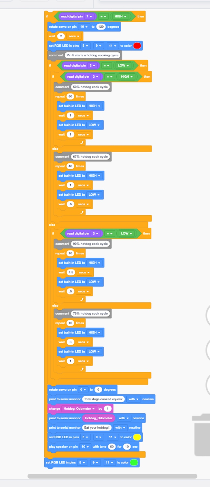
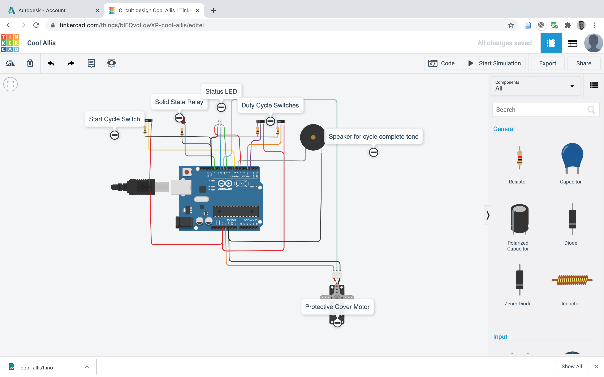
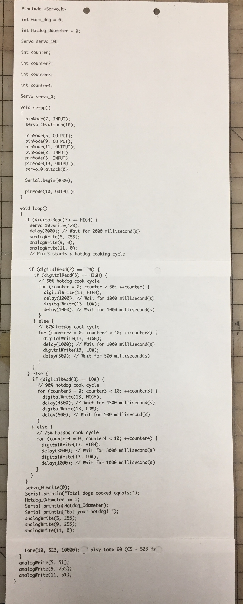

Programmable Electronics
"A world without hotdogs is chaos!"
For the programming aspect of my hotdog cooker project, the Arduino will have to control the following:
- The program will need to close and open the safety cover of the hotdog cooking chamber;
- The solid state relay that switches the 120vac to the cooking electrodes will have to be turned on and off to very the power delivered to the hotdog;
- A timer or counter will be needed to start and end the cooking process;
- Possibly a visible/audible signal during the time the hotdog electrodes are powered might be interesting and useful;
- Finally, a hotdog odometer to track the total number of hotdogs cooked would be interesting.
Here is the beta version block programming for the hotdog cooker: (I do see a few mistakes that need to be corrected. I will put the rev 2 code in tab for new class.)
Return to my home page.
Arduino circuit: to control a servo motor that will close the cooking chamber. This will turn a lenght of 3/8-16 threaded rod that will act as a linear actuator. After the cover is closed the solid state relay is pulsed to control the 120vac to the cooker nails. Two switches control four possible cooking intensities. Then the sevro motor opens the chamber and a tone is sounded.
Fusion 360 Designed Object:

The object I desiged using fusion 360 is the beginnings of an audio horn that could possibly be used to amplify the sound from an iPhone. I would like to curve the horn into a modified "S" shape.
Here is a link to the Fusion 360 file Fusion 360 horn design.
Text of the Arduino code:
The operation of the solid state relay with the "blink" program: